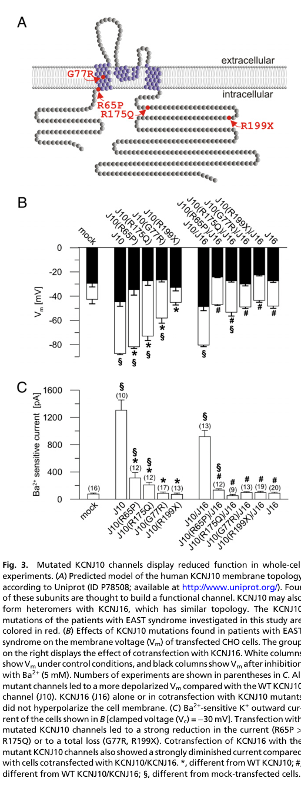

EAST syndrome (also called SeSAME syndrome) is a rare autosomal recessive disorder caused by biallelic loss-of-function variants in KCNJ10, which encodes the inwardly rectifying potassium channel Kir4.1. Kir4.1 is expressed in glia of the brain and spinal cord, in the inner ear (stria vascularis of the cochlea), in the kidney (basolateral membrane of the distal convoluted tubule), and in the eye. Channel loss of function produces the cardinal tetrad of Epilepsy, Ataxia, Sensorineural deafness, and a renal salt-wasting Tubulopathy with normotensive hypokalemic metabolic alkalosis and hypomagnesemia, typically accompanied by developmental delay and intellectual disability. The syndrome was independently described in 2009 by Bockenhauer et al. (who named it EAST) and Scholl et al. (who named it SeSAME).
Ask a research question about EAST Syndrome. OpenScientist will conduct autonomous deep research using the Disorder Mechanisms Knowledge Base and PubMed literature (typically 10-30 minutes).
Do not include personal health information in your question. Questions and results are cached in your browser's local storage.
name: EAST Syndrome
creation_date: "2026-06-03T00:00:00Z"
category: Genetic
description: >-
EAST syndrome (also called SeSAME syndrome) is a rare autosomal recessive
disorder caused by biallelic loss-of-function variants in KCNJ10, which encodes
the inwardly rectifying potassium channel Kir4.1. Kir4.1 is expressed in glia
of the brain and spinal cord, in the inner ear (stria vascularis of the
cochlea), in the kidney (basolateral membrane of the distal convoluted tubule),
and in the eye. Channel loss of function produces the cardinal tetrad of
Epilepsy, Ataxia, Sensorineural deafness, and a renal salt-wasting
Tubulopathy with normotensive hypokalemic metabolic alkalosis and
hypomagnesemia, typically accompanied by developmental delay and intellectual
disability. The syndrome was independently described in 2009 by Bockenhauer
et al. (who named it EAST) and Scholl et al. (who named it SeSAME).
disease_term:
preferred_term: EAST syndrome
term:
id: MONDO:0013005
label: EAST syndrome
synonyms:
- SeSAME syndrome
- seizures, sensorineural deafness, ataxia, intellectual disability and electrolyte imbalance
- seizures-sensorineural deafness-ataxia-intellectual disability-electrolyte imbalance syndrome
references:
- reference: PMID:19420365
title: "Epilepsy, ataxia, sensorineural deafness, tubulopathy, and KCNJ10 mutations."
- reference: PMID:19289823
title: "Seizures, sensorineural deafness, ataxia, mental retardation, and electrolyte imbalance (SeSAME syndrome) caused by mutations in KCNJ10."
- reference: PMID:20651251
title: "KCNJ10 gene mutations causing EAST syndrome (epilepsy, ataxia, sensorineural deafness, and tubulopathy) disrupt channel function."
- reference: PMID:21300747
title: "Altered electroretinograms in patients with KCNJ10 mutations and EAST syndrome."
- reference: PMID:21849804
title: "KCNJ10 mutations disrupt function in patients with EAST syndrome."
- reference: PMID:23924083
title: "Neurological features of epilepsy, ataxia, sensorineural deafness, tubulopathy syndrome."
- reference: PMID:27500072
title: "EAST syndrome: Clinical, pathophysiological, and genetic aspects of mutations in KCNJ10."
- reference: PMID:29722015
title: "EAST/SeSAME syndrome: Review of the literature and introduction of four new Latvian patients."
pathophysiology:
- name: Kir4.1 Potassium Channel Loss of Function
description: >-
Biallelic missense or nonsense variants in KCNJ10 reduce or abolish the
inwardly rectifying potassium current carried by Kir4.1. Heterologous
expression of patient mutations in Xenopus oocytes causes significant and
specific decreases in potassium currents, and many of the mutations affect
highly conserved residues known to cause loss of function in related K+
channels. This is the primary molecular lesion underlying all downstream
organ-specific manifestations.
gene:
preferred_term: KCNJ10
term:
id: hgnc:6256
label: KCNJ10
molecular_functions:
- preferred_term: inward rectifier potassium channel activity
term:
id: GO:0005242
label: inward rectifier potassium channel activity
modifier: DECREASED
biological_processes:
- preferred_term: potassium ion transmembrane transport
term:
id: GO:0071805
label: potassium ion transmembrane transport
modifier: DECREASED
evidence:
- reference: PMID:19289823
reference_title: "Seizures, sensorineural deafness, ataxia, mental retardation, and electrolyte imbalance (SeSAME syndrome) caused by mutations in KCNJ10."
supports: SUPPORT
evidence_source: HUMAN_CLINICAL
snippet: "Direct DNA sequencing of KCNJ10, which encodes an inwardly rectifying K(+) channel, identifies previously unidentified missense or nonsense mutations on both alleles in all affected subjects."
explanation: >-
Establishes biallelic KCNJ10 variants in an inwardly rectifying potassium
channel as the genetic basis of the syndrome.
- reference: PMID:19420365
reference_title: "Epilepsy, ataxia, sensorineural deafness, tubulopathy, and KCNJ10 mutations."
supports: SUPPORT
evidence_source: IN_VITRO
snippet: "These mutations, when expressed heterologously in xenopus oocytes, caused significant and specific decreases in potassium currents."
explanation: >-
Functional expression demonstrates the variants reduce Kir4.1 potassium
channel activity (loss of function).
- reference: PMID:27500072
reference_title: "EAST syndrome: Clinical, pathophysiological, and genetic aspects of mutations in KCNJ10."
supports: SUPPORT
evidence_source: HUMAN_CLINICAL
snippet: "So far 14 different KCNJ10 mutations have been published which either directly affect channel function or may lead to mislocalisation."
explanation: >-
Reviews the spectrum of KCNJ10 mutations, which cause disease either by
directly impairing channel function or by channel mislocalisation.
- reference: PMID:20651251
reference_title: "KCNJ10 gene mutations causing EAST syndrome (epilepsy, ataxia, sensorineural deafness, and tubulopathy) disrupt channel function."
supports: SUPPORT
evidence_source: IN_VITRO
snippet: "When expressed in CHO and HEK293 cells, the KCNJ10 mutations R65P, G77R, and R175Q caused a marked impairment of channel function. R199X showed complete loss of function."
explanation: >-
Functional electrophysiology of specific patient mutations confirms loss
of Kir4.1 channel function, ranging from marked impairment to complete
loss.
downstream:
- target: Impaired Glial Potassium Buffering
causal_link_type: DIRECT
- target: Impaired Cochlear Endolymph Homeostasis
causal_link_type: DIRECT
- target: Distal Tubule Salt Wasting
causal_link_type: DIRECT
- name: Impaired Glial Potassium Buffering
description: >-
In the brain and spinal cord, Kir4.1 is expressed in glia, where it takes up
extracellular K+ released by neuronal repolarization (spatial potassium
buffering) and supports glutamate clearance. Loss of Kir4.1 raises
extracellular potassium and impairs glial homeostasis, contributing to the
neuronal hyperexcitability that produces seizures and to cerebellar
dysfunction causing ataxia.
cell_types:
- preferred_term: glial cell
term:
id: CL:0000125
label: glial cell
biological_processes:
- preferred_term: potassium ion homeostasis
term:
id: GO:0055075
label: potassium ion homeostasis
modifier: DECREASED
- preferred_term: neurotransmitter uptake
term:
id: GO:0001504
label: neurotransmitter uptake
modifier: DECREASED
locations:
- preferred_term: brain
term:
id: UBERON:0000955
label: brain
evidence:
- reference: PMID:19289823
reference_title: "Seizures, sensorineural deafness, ataxia, mental retardation, and electrolyte imbalance (SeSAME syndrome) caused by mutations in KCNJ10."
supports: SUPPORT
evidence_source: HUMAN_CLINICAL
snippet: "KCNJ10 is expressed in glia in the brain and spinal cord, where it is believed to take up K(+) released by neuronal repolarization"
explanation: >-
Identifies the glial potassium-buffering role of Kir4.1 whose loss drives
the neurological phenotype.
downstream:
- target: Seizures
causal_link_type: INDIRECT_UNKNOWN_INTERMEDIATES
- target: Cerebellar Ataxia
causal_link_type: INDIRECT_UNKNOWN_INTERMEDIATES
- name: Impaired Cochlear Endolymph Homeostasis
description: >-
In the cochlea, Kir4.1 is expressed in the stria vascularis and is required
for the generation of endolymph and the endocochlear potential. Loss of
Kir4.1 function impairs endolymph homeostasis and the ionic environment
needed for normal hair-cell transduction, producing sensorineural hearing
loss.
biological_processes:
- preferred_term: potassium ion transmembrane transport
term:
id: GO:0071805
label: potassium ion transmembrane transport
modifier: DECREASED
locations:
- preferred_term: stria vascularis of cochlear duct
term:
id: UBERON:0002282
label: stria vascularis of cochlear duct
- preferred_term: cochlea
term:
id: UBERON:0001844
label: cochlea
evidence:
- reference: PMID:19289823
reference_title: "Seizures, sensorineural deafness, ataxia, mental retardation, and electrolyte imbalance (SeSAME syndrome) caused by mutations in KCNJ10."
supports: SUPPORT
evidence_source: HUMAN_CLINICAL
snippet: "in cochlea, where it is involved in the generation of endolymph"
explanation: >-
Establishes the cochlear role of Kir4.1 in endolymph generation, the basis
of the sensorineural deafness.
- reference: PMID:21849804
reference_title: "KCNJ10 mutations disrupt function in patients with EAST syndrome."
supports: SUPPORT
evidence_source: HUMAN_CLINICAL
snippet: "KCNJ10 is expressed in the kidney distal convoluted tubule, cochlear stria vascularis and brain glial cells."
explanation: >-
Confirms Kir4.1 expression in the cochlear stria vascularis (alongside the
renal distal tubule and brain glia), the basis of the multi-organ
phenotype.
downstream:
- target: Sensorineural Hearing Loss
causal_link_type: INDIRECT_UNKNOWN_INTERMEDIATES
- name: Distal Tubule Salt Wasting
description: >-
In the kidney, Kir4.1 sits on the basolateral membrane of the distal
convoluted tubule (often as a Kir4.1/Kir5.1 heteromer with KCNJ16), where K+
recycling across the basolateral membrane is required to sustain Na+-K+-ATPase
activity and thus normal NaCl reabsorption. Loss of Kir4.1 impairs basolateral
K+ recycling, causing renal salt wasting with a Gitelman-like biochemical
profile: normotensive hypokalemic metabolic alkalosis, hypomagnesemia, and
hypocalciuria. Patient distal tubular cells show reduced basolateral
infoldings, reflecting impaired salt-reabsorption capacity.
cell_types:
- preferred_term: kidney distal convoluted tubule epithelial cell
term:
id: CL:1000849
label: kidney distal convoluted tubule epithelial cell
biological_processes:
- preferred_term: sodium ion transmembrane transport
term:
id: GO:0035725
label: sodium ion transmembrane transport
modifier: DECREASED
- preferred_term: potassium ion transmembrane transport
term:
id: GO:0071805
label: potassium ion transmembrane transport
modifier: DECREASED
locations:
- preferred_term: distal convoluted tubule
term:
id: UBERON:0001292
label: distal convoluted tubule
evidence:
- reference: PMID:19289823
reference_title: "Seizures, sensorineural deafness, ataxia, mental retardation, and electrolyte imbalance (SeSAME syndrome) caused by mutations in KCNJ10."
supports: SUPPORT
evidence_source: HUMAN_CLINICAL
snippet: "We propose that KCNJ10 is required in the kidney for normal salt reabsorption in the distal convoluted tubule because of the need for K(+) recycling across the basolateral membrane to enable normal activity of the Na(+)-K(+)-ATPase; loss of this function accounts for the observed electrolyte defects."
explanation: >-
Provides the mechanistic basis for the renal salt-wasting tubulopathy and
electrolyte imbalance.
- reference: PMID:19420365
reference_title: "Epilepsy, ataxia, sensorineural deafness, tubulopathy, and KCNJ10 mutations."
supports: SUPPORT
evidence_source: MODEL_ORGANISM
snippet: "Mice with Kcnj10 deletions became dehydrated, with definitive evidence of renal salt wasting."
explanation: >-
Mouse Kcnj10 knockout recapitulates the renal salt-wasting phenotype,
supporting the causal mechanism.
- reference: PMID:20651251
reference_title: "KCNJ10 gene mutations causing EAST syndrome (epilepsy, ataxia, sensorineural deafness, and tubulopathy) disrupt channel function."
supports: SUPPORT
evidence_source: MODEL_ORGANISM
snippet: "Kcnj10 and Kcnj16 were found in the basolateral membrane of mouse distal convoluted tubules, connecting tubules, and cortical collecting ducts."
explanation: >-
Localizes Kir4.1 (with Kir5.1/KCNJ16) to the basolateral membrane of the
distal nephron, the anatomic basis of the renal salt-wasting mechanism.
- reference: PMID:20651251
reference_title: "KCNJ10 gene mutations causing EAST syndrome (epilepsy, ataxia, sensorineural deafness, and tubulopathy) disrupt channel function."
supports: SUPPORT
evidence_source: HUMAN_CLINICAL
snippet: "EM of distal tubular cells of a patient with EAST syndrome showed reduced basal infoldings in this nephron segment, which likely reflects the morphological consequences of the impaired salt reabsorption capacity."
explanation: >-
Patient ultrastructural pathology (reduced basal infoldings in the distal
tubule) corroborates impaired salt reabsorption.
downstream:
- target: Hypokalemic Metabolic Alkalosis
causal_link_type: DIRECT
- target: Hypomagnesemia
causal_link_type: INDIRECT_UNKNOWN_INTERMEDIATES
- target: Renal Salt Wasting
causal_link_type: DIRECT
phenotypes:
- category: Phenotypic
name: Seizures
description: >-
Epilepsy with onset in infancy; affected children typically present with
tonic-clonic seizures. Seizures generally respond well to antiepileptic
treatment.
phenotype_term:
preferred_term: Seizure
term:
id: HP:0001250
label: Seizure
onset:
onset_category: INFANTILE
frequency: VERY_FREQUENT
evidence:
- reference: PMID:23924083
reference_title: "Neurological features of epilepsy, ataxia, sensorineural deafness, tubulopathy syndrome."
supports: SUPPORT
evidence_source: HUMAN_CLINICAL
snippet: "All children presented with tonic-clonic seizures in infancy."
explanation: >-
In a cohort of nine genetically proven EAST patients, all presented with
tonic-clonic seizures in infancy, supporting seizures as a very frequent
cardinal feature.
- category: Phenotypic
name: Cerebellar Ataxia
description: >-
Severe, typically non-progressive cerebellar ataxia. Ataxia is often the
most debilitating feature; some patients become non-ambulant.
phenotype_term:
preferred_term: Ataxia
term:
id: HP:0001251
label: Ataxia
clinical_course: STABLE
frequency: VERY_FREQUENT
evidence:
- reference: PMID:23924083
reference_title: "Neurological features of epilepsy, ataxia, sensorineural deafness, tubulopathy syndrome."
supports: SUPPORT
evidence_source: HUMAN_CLINICAL
snippet: "Later, non-progressive, cerebellar ataxia and hearing loss were noted."
explanation: >-
Documents non-progressive cerebellar ataxia as a consistent feature of the
neurological phenotype.
- reference: PMID:23924083
reference_title: "Neurological features of epilepsy, ataxia, sensorineural deafness, tubulopathy syndrome."
supports: SUPPORT
evidence_source: HUMAN_CLINICAL
snippet: "ataxia proved to be the most debilitating feature, with three patients non-ambulant"
explanation: >-
Highlights the severity and functional impact of the ataxia.
- category: Phenotypic
name: Sensorineural Hearing Loss
description: >-
Moderate sensorineural deafness due to impaired Kir4.1-dependent endolymph
homeostasis in the cochlea.
phenotype_term:
preferred_term: Sensorineural hearing impairment
term:
id: HP:0000407
label: Sensorineural hearing impairment
frequency: VERY_FREQUENT
evidence:
- reference: PMID:19420365
reference_title: "Epilepsy, ataxia, sensorineural deafness, tubulopathy, and KCNJ10 mutations."
supports: SUPPORT
evidence_source: HUMAN_CLINICAL
snippet: "epilepsy beginning in infancy and severe ataxia, moderate sensorineural deafness, and a renal salt-losing tubulopathy with normotensive hypokalemic metabolic alkalosis"
explanation: >-
The original case series describes moderate sensorineural deafness as part
of the defining clinical tetrad.
- category: Phenotypic
name: Renal Salt Wasting
description: >-
A renal salt-losing tubulopathy of the distal convoluted tubule, clinically
resembling Gitelman syndrome, with normotensive electrolyte imbalance.
phenotype_term:
preferred_term: Renal salt wasting
term:
id: HP:0000127
label: Renal salt wasting
frequency: VERY_FREQUENT
evidence:
- reference: PMID:19420365
reference_title: "Epilepsy, ataxia, sensorineural deafness, tubulopathy, and KCNJ10 mutations."
supports: SUPPORT
evidence_source: HUMAN_CLINICAL
snippet: "a renal salt-losing tubulopathy with normotensive hypokalemic metabolic alkalosis"
explanation: >-
Defines the renal salt-wasting tubulopathy component of the syndrome.
- category: Phenotypic
name: Hypokalemic Metabolic Alkalosis
description: >-
Hypokalemia with metabolic alkalosis resulting from distal tubule salt
wasting, characteristically with normal blood pressure.
phenotype_term:
preferred_term: Hypokalemic metabolic alkalosis
term:
id: HP:0001960
label: Hypokalemic metabolic alkalosis
frequency: VERY_FREQUENT
evidence:
- reference: PMID:19289823
reference_title: "Seizures, sensorineural deafness, ataxia, mental retardation, and electrolyte imbalance (SeSAME syndrome) caused by mutations in KCNJ10."
supports: SUPPORT
evidence_source: HUMAN_CLINICAL
snippet: "electrolyte imbalance (hypokalemia, metabolic alkalosis, and hypomagnesemia)"
explanation: >-
Documents the characteristic electrolyte derangement of hypokalemia with
metabolic alkalosis.
- category: Phenotypic
name: Hypomagnesemia
description: >-
Low serum magnesium due to impaired distal tubule magnesium handling, part
of the Gitelman-like biochemical profile.
phenotype_term:
preferred_term: Hypomagnesemia
term:
id: HP:0002917
label: Hypomagnesemia
frequency: FREQUENT
evidence:
- reference: PMID:19289823
reference_title: "Seizures, sensorineural deafness, ataxia, mental retardation, and electrolyte imbalance (SeSAME syndrome) caused by mutations in KCNJ10."
supports: SUPPORT
evidence_source: HUMAN_CLINICAL
snippet: "electrolyte imbalance (hypokalemia, metabolic alkalosis, and hypomagnesemia)"
explanation: >-
Lists hypomagnesemia as a component of the electrolyte imbalance in SeSAME
syndrome.
- category: Phenotypic
name: Abnormal Electroretinogram
description: >-
Altered electroretinogram (ERG) findings reflecting Kir4.1 expression in
retinal Muller glia; reported as reduced photopic negative response
amplitudes and reduced retinal sensitivity in EAST patients.
phenotype_term:
preferred_term: Abnormal electroretinogram
term:
id: HP:0000512
label: Abnormal electroretinogram
evidence:
- reference: PMID:21300747
reference_title: "Altered electroretinograms in patients with KCNJ10 mutations and EAST syndrome."
supports: SUPPORT
evidence_source: HUMAN_CLINICAL
snippet: "We have studied the impact of KCNJ10 mutations on the human electroretinogram (ERG) in four unrelated patients with EAST syndrome."
explanation: >-
Human ERG study in EAST patients documents altered retinal
electrophysiology attributable to KCNJ10/Kir4.1 dysfunction in Muller glia.
- category: Phenotypic
name: Intellectual Disability
description: >-
Intellectual disability / developmental delay (the "mental retardation"
component captured in the SeSAME acronym).
phenotype_term:
preferred_term: Intellectual disability
term:
id: HP:0001249
label: Intellectual disability
evidence:
- reference: PMID:19289823
reference_title: "Seizures, sensorineural deafness, ataxia, mental retardation, and electrolyte imbalance (SeSAME syndrome) caused by mutations in KCNJ10."
supports: SUPPORT
evidence_source: HUMAN_CLINICAL
snippet: "a previously unrecognized syndrome characterized by seizures, sensorineural deafness, ataxia, mental retardation, and electrolyte imbalance"
explanation: >-
The SeSAME description includes mental retardation (intellectual
disability) as a defining feature.
- category: Phenotypic
name: Brain MRI Abnormalities
description: >-
Consistent neuroimaging abnormalities, including subtle symmetrical signal
changes in the cerebellar dentate nuclei, and in some patients a small
corpus callosum and brainstem hypoplasia.
phenotype_term:
preferred_term: Abnormal cerebellum morphology
term:
id: HP:0001317
label: Abnormal cerebellum morphology
evidence:
- reference: PMID:23924083
reference_title: "Neurological features of epilepsy, ataxia, sensorineural deafness, tubulopathy syndrome."
supports: SUPPORT
evidence_source: HUMAN_CLINICAL
snippet: "All available magnetic resonance imaging (MRI) revealed subtle symmetrical signal changes in the cerebellar dentate nuclei."
explanation: >-
Documents consistent cerebellar/dentate MRI abnormalities that may aid
diagnosis.
genetic:
- name: KCNJ10 loss of function
gene_term:
preferred_term: KCNJ10
term:
id: hgnc:6256
label: KCNJ10
relationship_type: CAUSATIVE
notes: >-
Biallelic (homozygous or compound heterozygous) missense and nonsense
variants in KCNJ10 (Kir4.1) cause EAST/SeSAME syndrome in an autosomal
recessive manner. The original families harbored homozygous missense
mutations identified by linkage to chromosome 1q23.2.
evidence:
- reference: PMID:19420365
reference_title: "Epilepsy, ataxia, sensorineural deafness, tubulopathy, and KCNJ10 mutations."
supports: SUPPORT
evidence_source: HUMAN_CLINICAL
snippet: "This region contained the KCNJ10 gene, which encodes a potassium channel expressed in the brain, inner ear, and kidney. Sequencing of this candidate gene revealed homozygous missense mutations in affected persons in both families."
explanation: >-
Linkage and sequencing identify homozygous KCNJ10 missense mutations as
the cause in the original consanguineous families.
- reference: PMID:19289823
reference_title: "Seizures, sensorineural deafness, ataxia, mental retardation, and electrolyte imbalance (SeSAME syndrome) caused by mutations in KCNJ10."
supports: SUPPORT
evidence_source: HUMAN_CLINICAL
snippet: "These findings demonstrate that loss-of-function mutations in KCNJ10 cause this syndrome, which we name SeSAME."
explanation: >-
Independent confirmation that KCNJ10 loss-of-function mutations cause the
syndrome.
treatments:
- name: Electrolyte Replacement
description: >-
Oral potassium and magnesium supplementation to correct the hypokalemia and
hypomagnesemia of the renal salt-wasting tubulopathy.
treatment_term:
preferred_term: potassium supplementation
term:
id: MAXO:0001123
label: potassium supplementation
target_phenotypes:
- preferred_term: Hypokalemia
term:
id: HP:0002900
label: Hypokalemia
evidence:
- reference: PMID:29722015
reference_title: "EAST/SeSAME syndrome: Review of the literature and introduction of four new Latvian patients."
supports: SUPPORT
evidence_source: HUMAN_CLINICAL
snippet: "The treatment is based on antiepileptic drugs, electrolyte replacement, hearing aids and mobility devices."
explanation: >-
Review of reported patients identifies electrolyte replacement as a
mainstay of management.
- name: Magnesium Supplementation
description: >-
Oral magnesium supplementation to correct hypomagnesemia associated with the
distal tubulopathy.
treatment_term:
preferred_term: magnesium supplementation
term:
id: MAXO:0001149
label: magnesium supplementation
target_phenotypes:
- preferred_term: Hypomagnesemia
term:
id: HP:0002917
label: Hypomagnesemia
evidence:
- reference: PMID:29722015
reference_title: "EAST/SeSAME syndrome: Review of the literature and introduction of four new Latvian patients."
supports: SUPPORT
evidence_source: HUMAN_CLINICAL
snippet: "The treatment is based on antiepileptic drugs, electrolyte replacement, hearing aids and mobility devices."
explanation: >-
Electrolyte replacement, which includes magnesium for the hypomagnesemia,
is a core component of management.
- name: Antiepileptic Drug Therapy
description: >-
Anticonvulsant therapy to control the infantile-onset seizures, which
generally respond well to treatment.
treatment_term:
preferred_term: anticonvulsant agent therapy
term:
id: MAXO:0000167
label: anticonvulsant agent therapy
target_phenotypes:
- preferred_term: Seizure
term:
id: HP:0001250
label: Seizure
evidence:
- reference: PMID:23924083
reference_title: "Neurological features of epilepsy, ataxia, sensorineural deafness, tubulopathy syndrome."
supports: SUPPORT
evidence_source: HUMAN_CLINICAL
snippet: "Whilst seizures mostly responded well to treatment"
explanation: >-
Seizures in EAST syndrome typically respond well to antiepileptic
treatment.
- name: Hearing Aids
description: >-
Hearing aids and supportive audiologic management for the sensorineural
hearing loss.
treatment_term:
preferred_term: hearing aid usage
term:
id: MAXO:0009030
label: hearing aid usage
target_phenotypes:
- preferred_term: Sensorineural hearing impairment
term:
id: HP:0000407
label: Sensorineural hearing impairment
evidence:
- reference: PMID:29722015
reference_title: "EAST/SeSAME syndrome: Review of the literature and introduction of four new Latvian patients."
supports: SUPPORT
evidence_source: HUMAN_CLINICAL
snippet: "The treatment is based on antiepileptic drugs, electrolyte replacement, hearing aids and mobility devices."
explanation: >-
Hearing aids are part of standard supportive management for the
sensorineural deafness.
Question: You are an expert researcher providing comprehensive, well-cited information.
Provide detailed information focusing on: 1. Key concepts and definitions with current understanding 2. Recent developments and latest research (prioritize 2023-2024 sources) 3. Current applications and real-world implementations 4. Expert opinions and analysis from authoritative sources 5. Relevant statistics and data from recent studies
Format as a comprehensive research report with proper citations. Include URLs and publication dates where available. Always prioritize recent, authoritative sources and provide specific citations for all major claims.
Please provide a comprehensive research report on EAST Syndrome covering all of the disease characteristics listed below. This report will be used to populate a disease knowledge base entry. Be thorough and cite primary literature (PMID preferred) for all claims.
For each section, suggested databases/resources are listed. These are the first places you should search for information on each topic.
Search first: OMIM, Orphanet, ICD-10/ICD-11, MeSH, PubMed
Search first: PubMed, Cochrane Library, UpToDate, clinical guidelines, ClinVar, ClinGen, GWAS Catalog, PheGenI, CTD, CDC, WHO, epidemiological databases
Search first: PubMed, Cochrane Library, clinical trial databases, GWAS Catalog, gnomAD, WHO, CDC, nutrition databases
Search first: CTD, PubMed, PheGenI, GxE databases
Search first: HPO (Human Phenotype Ontology), OMIM, Orphanet, PubMed, clinicaltrials.gov, MedDRA, SNOMED CT, DECIPHER, LOINC
For each phenotype, provide: - Phenotype type: symptoms, clinical signs, physical manifestations, behavioral changes, or laboratory abnormalities
For symptoms/signs: HPO, OMIM, Orphanet, PubMed For behavioral changes: HPO, DSM, RDoC (Research Domain Criteria), PubMed For laboratory abnormalities: LOINC, SNOMED CT, LabTests Online, PubMed - Phenotype characteristics: Search first: OMIM, Orphanet, HPO, PubMed - Age of symptom onset (neonatal, childhood, adult-onset, late-onset) - Symptom severity (mild, moderate, severe, variable) - Symptom progression (stable, progressive, episodic, fluctuating) - Frequency among affected individuals (percentage or qualitative) - Quality of life impact: Effects on daily functioning and well-being (per-phenotype when possible) Search first: EQ-5D database, SF-36, WHO QOL databases, PubMed - Suggest HPO (Human Phenotype Ontology) terms for each phenotype
Search first: OMIM, ClinVar, HGMD, Ensembl, NCBI Gene
Search first: ENCODE, Roadmap Epigenomics, MethBase, DiseaseMeth
Search first: DECIPHER, ClinVar, ECARUCA, UCSC Genome Browser
Search first: CTD (Comparative Toxicogenomics Database), TOXNET, PubMed, EPA databases
Search first: CDC databases, WHO, PubMed, NHANES
Search first: NCBI Taxonomy, ViPR, BV-BRC, MicrobeDB, GIDEON
Search first: KEGG, Reactome, WikiPathways, PathBank, BioCyc
Search first: Gene Ontology (GO), Reactome, KEGG, PubMed
Search first: UniProt, PDB (Protein Data Bank), InterPro, Pfam, AlphaFold
Search first: KEGG, BioCyc, HMDB (Human Metabolome Database), BRENDA
Search first: ImmPort, Immunome Database, IEDB, Gene Ontology
Search first: PubMed, Gene Ontology, Reactome
Search first: BRENDA, UniProt, KEGG, OMIM, PubMed
Search first: ENCODE, Roadmap Epigenomics, MethBase, DiseaseMeth
For each mechanism, describe: - The causal chain from initial trigger to clinical manifestation - Which mechanisms are upstream vs downstream - What cell types and biological processes are involved - Suggest GO terms for biological processes and CL terms for cell types
Search first: Uberon, FMA (Foundational Model of Anatomy), OMIM, HPO, ICD-11, MeSH, SNOMED CT
Search first: Uberon, Human Protein Atlas, Cell Ontology, Human Cell Atlas, CellMarker, PanglaoDB
Search first: Gene Ontology (Cellular Component), UniProt, Human Protein Atlas
Search first: OMIM, Orphanet, HPO, PubMed
Search first: Disease registries, longitudinal cohort databases, natural history studies, PubMed, Orphanet, OMIM
Search first: Orphanet, CDC, WHO, GBD (Global Burden of Disease), national registries, SEER, disease registries
Search first: GTR (Genetic Testing Registry), GeneReviews, ClinGen
For each treatment, suggest MAXO (Medical Action Ontology) terms where applicable.
Search first: CDC vaccine schedules, WHO immunization, FDA vaccine database
Search first: CDC, WHO, behavioral intervention databases, Cochrane Library
Search first: NSGC resources, ACMG guidelines, GeneReviews
Search first: Clinical guidelines, FDA approvals, PubMed
Search first: NCBI Taxonomy
Search first: VBO (Vertebrate Breed Ontology)
Search first: NCBI Gene
Structure your response as a comprehensive narrative organized by the sections above. For each section, provide: - Factual content with specific details (numbers, percentages, gene names, variant nomenclature) - Ontology term suggestions (HPO, GO, CL, UBERON, CHEBI, MAXO, MONDO) where applicable - Evidence citations with PMIDs - Direct quotes from abstracts to support key claims - Clear indication when information is not available or not applicable for this disease
This report will be used to populate a disease knowledge base entry with: - Pathophysiology descriptions with causal chains - Gene/protein annotations (HGNC, GO terms) - Phenotype associations (HP terms) with frequencies - Cell type involvement (CL terms) - Anatomical locations (UBERON terms) - Chemical entities (CHEBI terms) - Treatment annotations (MAXO terms) - Evidence items with PMIDs and exact abstract quotes - Epidemiology, prognosis, diagnostic, and prevention information - Animal model descriptions with phenotype recapitulation details
Definition and current understanding. EAST syndrome is a rare multisystem disorder caused by biallelic loss-of-function variants in KCNJ10, encoding the inwardly rectifying potassium channel Kir4.1. It is clinically defined by a characteristic tetrad: epilepsy/seizures, ataxia, sensorineural deafness, and renal salt-wasting tubulopathy (reichold2010kcnj10genemutations pages 1-2). The term SeSAME emphasizes frequent additional neurodevelopmental impairment and electrolyte imbalance (fracaro2024roleofkir4.1 pages 11-12, nadella2019identificationandfunctional pages 11-12).
Key identifiers (available from retrieved sources). - OMIM (disease): #612780 (EAST syndrome / SeSAME) (thimm2024untanglingtheuncertain pages 6-6, roesch2021geneticdeterminantsof pages 9-10) - OMIM (gene): KCNJ10 = *602208 (roesch2021geneticdeterminantsof pages 9-10) - ICD-10/ICD-11, MeSH, Orphanet: Not present in the retrieved full texts; would require explicit database querying.
Evidence source type. Most clinical characterization is derived from case reports/series and small family studies plus mechanistic/functional electrophysiology in heterologous systems and animal models (e.g., channel function testing in Reichold et al.) (reichold2010kcnj10genemutations pages 1-2, reichold2010kcnj10genemutations pages 3-4).
Primary cause: biallelic pathogenic variants in KCNJ10 (Kir4.1) leading to loss of Kir4.1 channel function across relevant tissues (brain glia, distal nephron, cochlea) (fracaro2024roleofkir4.1 pages 11-12, reichold2010kcnj10genemutations pages 1-2).
Direct abstract quote (primary literature): - Reichold et al. (PNAS, 2010) states: “Mutations of the KCNJ10 (Kir4.1) K+ channel underlie autosomal recessive epilepsy, ataxia, sensorineural deafness, and (a salt-wasting) renal tubulopathy (EAST) syndrome.” (reichold2010kcnj10genemutations pages 1-2)
1) Neurologic: seizures/epilepsy; ataxia; variable neurodevelopmental impairment/intellectual disability (fracaro2024roleofkir4.1 pages 11-12, reichold2010kcnj10genemutations pages 1-2). 2) Renal tubulopathy: salt wasting resembling Gitelman syndrome with characteristic electrolyte/acid–base pattern (below) (reichold2010kcnj10genemutations pages 1-2). 3) Auditory: sensorineural hearing loss (variable severity) (fracaro2024roleofkir4.1 pages 11-12). 4) Ophthalmic physiology (functional): altered electroretinogram findings have been demonstrated in affected patients (thompson2011alteredelectroretinogramsin pages 1-2).
Reichold et al. (2010) describes the renal phenotype as Gitelman-like and comprising: - urinary Na+ loss - RAAS activation - hypokalemic metabolic alkalosis - hypomagnesemia - hypocalciuria (reichold2010kcnj10genemutations pages 1-2)
Recent review-level summary (2024) indicates: - “Seizures generally occur at the beginning of childhood” and “degree of hearing impairment ranges from mild to severe” with variable intrafamilial expressivity (fracaro2024roleofkir4.1 pages 11-12).
Not quantified in retrieved studies; expected burdens include refractory seizures, balance/gait impairment, hearing loss requiring assistive technology, and lifelong electrolyte management (inferred from phenotype definition and supportive treatment approaches used in salt-wasting disorders) (thimm2024untanglingtheuncertain pages 6-6, reichold2010kcnj10genemutations pages 1-2).
Landmark functional testing (Reichold et al., PNAS 2010). Variants tested included R65P, G77R, R175Q, R199X, all showing partial or complete loss-of-function in electrophysiology assays (reichold2010kcnj10genemutations pages 3-4, reichold2010kcnj10genemutations pages 1-2). - Open probability (single channel): WT ~70–80%; R65P ~20–30%; R175Q ~10–15%; G77R ~0.5% (nearly inactive) (reichold2010kcnj10genemutations pages 3-4). - pH sensitivity: WT IC50 ~pH 6.3; R65P shifted to ~7.8; R175Q shifted to ~9.35 (strong alkaline shift) (reichold2010kcnj10genemutations pages 3-4). - PIP2 affinity: R175Q showed markedly reduced PIP2 affinity (poly-Lys inhibition time constant 0.47 ± 0.1 s vs WT 17.89 ± 3.1 s) (reichold2010kcnj10genemutations pages 4-5).
Additional variants mentioned in later summaries. Reviews and variant-focused analyses cite additional missense and truncating variants (e.g., A167V, R297C, T164I, G83V, L166Q, and truncating frameshifts such as Asn232Glnfs*14 and Gly275Valfs*7) and interpret many as loss-of-function with variable severity (fracaro2024roleofkir4.1 pages 12-14, gur2025bioinformaticanalysisof pages 2-4).
Variant type classes (from evidence base): missense and nonsense/truncating variants are reported (fracaro2024roleofkir4.1 pages 11-12, fracaro2024roleofkir4.1 pages 12-14).
Allele frequency (gnomAD etc.): not available from retrieved evidence; requires database access.
No validated modifier genes for EAST syndrome were identified in the retrieved evidence. However, mechanistic overlap is highlighted with other Kir subunits (e.g., Kir5.1/KCNJ16 forming heteromers with Kir4.1), relevant to renal transport physiology and differential diagnosis (gondra2026typelocationand pages 1-2, gondra2026typelocationand pages 8-9).
No specific environmental toxins, pathogens, or lifestyle factors were identified as causal or modifying factors in the retrieved EAST-specific evidence. The disorder is primarily a genetic ion-channel disorder (reichold2010kcnj10genemutations pages 1-2, fracaro2024roleofkir4.1 pages 11-12).
Trigger: biallelic KCNJ10 loss-of-function → reduced Kir4.1 channel-mediated K+ conductance.
Kidney (distal convoluted tubule and related segments): Kir4.1 (often with Kir5.1) is localized to basolateral membranes where it supports a hyperpolarized membrane potential and “pump–leak coupling,” enabling Na+/K+-ATPase-dependent transport and linked electrolyte handling. Loss-of-function leads to impaired salt reabsorption and a Gitelman-like tubulopathy with RAAS activation and characteristic electrolyte pattern (reichold2010kcnj10genemutations pages 1-2, gondra2026typelocationand pages 1-2).
Cochlea/inner ear: Kir4.1 is required for endolymph K+ homeostasis and generation of the endocochlear potential; loss disrupts cochlear ionic homeostasis and contributes to sensorineural hearing loss (fracaro2024roleofkir4.1 pages 11-12).
Brain (glia/astrocytes): Kir4.1 in glia supports extracellular K+ buffering; loss-of-function is mechanistically linked to neuronal hyperexcitability and seizures, and contributes to broader neurologic phenotype (fracaro2024roleofkir4.1 pages 11-12, reichold2010kcnj10genemutations pages 1-2).
Quantitative channel dysfunction measures (open probability changes; pH IC50 shifts; PIP2 affinity differences) are provided above from the PNAS 2010 functional study (reichold2010kcnj10genemutations pages 3-4, reichold2010kcnj10genemutations pages 4-5).
GO Biological Process (examples): - potassium ion transport; potassium ion homeostasis - regulation of membrane potential - renal sodium ion transport / salt reabsorption
CL Cell types (examples): - CL:0000127 astrocyte - cochlear stria vascularis intermediate cells (cell ontology term availability varies; often annotated via tissue/cell-type strings) - distal convoluted tubule epithelial cell (kidney epithelial cell subtypes)
UBERON anatomy (examples): - kidney distal convoluted tubule - cochlea; stria vascularis - brain (astroglial compartment)
No robust survival/life expectancy data were identified in retrieved sources. Prognosis is expected to depend on seizure control, neurodevelopmental impairment, and chronic electrolyte disturbances. Phenotypic variability is documented (fracaro2024roleofkir4.1 pages 11-12).
Evidence base limitation: A 2024 review on sodium-wasting disorders notes that for rare syndromes, “there is only limited clinical information on treatment,” and management is largely supportive (thimm2024untanglingtheuncertain pages 6-6).
Supportive approaches used for salt-wasting tubulopathies (applied in related contexts and plausibly relevant to EAST’s Gitelman-like phenotype) include: - Fluid and electrolyte replacement, with careful volume management in newborns to prevent pre-renal injury (thimm2024untanglingtheuncertain pages 6-6). - Potassium supplementation (e.g., potassium chloride) as initial symptomatic therapy for hypokalemia (thimm2024untanglingtheuncertain pages 6-6). - Potassium-sparing agents (spironolactone, eplerenone, amiloride) to increase serum potassium and counteract metabolic alkalosis (thimm2024untanglingtheuncertain pages 6-6). - NSAIDs/prostaglandin inhibitors (e.g., indomethacin) in selected salt-wasting disorders (thimm2024untanglingtheuncertain pages 6-6). - ACE inhibitors may be used in some contexts to correct low K+ levels or counteract proteinuria (thimm2024untanglingtheuncertain pages 6-6).
Mechanism-linked therapeutic hypothesis (not established as standard of care): Because certain Kir4.1 variants show alkaline-shifted pH sensitivity, the PNAS 2010 study notes that altered pH sensitivity “may therefore have implications for the treatment” of mutation carriers, though no protocol is provided (reichold2010kcnj10genemutations pages 1-2, reichold2010kcnj10genemutations pages 3-4).
Specific anti-seizure medication regimens, rehabilitation approaches, and hearing interventions (hearing aids/cochlear implant outcomes) were not detailed in the retrieved EAST-focused evidence and would require additional clinical guideline retrieval.
Cross-species Kir4.1 biology and disease modeling has been leveraged in research (e.g., Drosophila irk2 modeling of Kir4.1-associated neurobehavioral phenotypes has been reported in preprint literature) (nadella2018novelkcnj10mutation pages 13-15).
1) Updated physiologic integration (2024): Review discussions continue to place EAST/SeSAME within the spectrum of salt-wasting tubulopathies and emphasize supportive electrolyte/volume management strategies used in these syndromes (thimm2024untanglingtheuncertain pages 6-6). 2) Auditory pathophysiology synthesis (2024): A 2024 review highlights Kir4.1’s cochlear expression (e.g., stria vascularis intermediate cells, root cells, supporting/glial cells) and its role in endocochlear potential maintenance, and summarizes EAST/SeSAME as a key Kir4.1-associated syndrome with variable hearing loss severity and early-childhood seizure onset (fracaro2024roleofkir4.1 pages 11-12).
No EAST syndrome–specific interventional trials were identified in the retrieved ClinicalTrials.gov searches; the only directly relevant entry retrieved was a broad rare kidney disease registry: - National Registry of Rare Kidney Diseases (NCT06065852; recruiting; observational; target enrollment 35,000) (clinical trial metadata retrieved in this run; no EAST-specific outcome data available).
Reichold et al. (2010) includes figures mapping Kir4.1 mutations and showing electrophysiology effects (channel schematics and functional traces), supporting variant-to-function conclusions (reichold2010kcnj10genemutations media 4e065939, reichold2010kcnj10genemutations media 5b951dbe, reichold2010kcnj10genemutations media 0b7ee06e).
| Topic | Key facts | Source (year) | DOI / URL | Evidence citation |
|---|---|---|---|---|
| Definition / core phenotype | EAST syndrome = Epilepsy, Ataxia, Sensorineural deafness, Tubulopathy; SeSAME = Seizures, Sensorineural deafness, Ataxia, Mental/Intellectual disability, Electrolyte imbalance. Rare multisystem disorder with neurologic, renal, and auditory involvement. | Reichold et al. 2010; Fracaro et al. 2024 | https://doi.org/10.1073/pnas.1003072107 ; https://doi.org/10.3390/app14124985 | (reichold2010kcnj10genemutations pages 1-2, fracaro2024roleofkir4.1 pages 11-12) |
| Causative gene / protein | Caused by biallelic loss-of-function variants in KCNJ10, encoding the inwardly rectifying potassium channel Kir4.1; gene located on chromosome 1q22-23. | Reichold et al. 2010; Fracaro et al. 2024 | https://doi.org/10.1073/pnas.1003072107 ; https://doi.org/10.3390/app14124985 | (reichold2010kcnj10genemutations pages 1-2, fracaro2024roleofkir4.1 pages 11-12) |
| Inheritance | Autosomal recessive disorder; several reported families are consanguineous. | Reichold et al. 2010; Fracaro et al. 2024 | https://doi.org/10.1073/pnas.1003072107 ; https://doi.org/10.3390/app14124985 | (reichold2010kcnj10genemutations pages 1-2, fracaro2024roleofkir4.1 pages 12-14, fracaro2024roleofkir4.1 pages 11-12) |
| Key renal electrolyte abnormalities | Gitelman-like salt-wasting tubulopathy with urinary Na+ loss, RAAS activation, hypokalemic metabolic alkalosis, hypomagnesemia, and hypocalciuria. | Reichold et al. 2010 | https://doi.org/10.1073/pnas.1003072107 | (reichold2010kcnj10genemutations pages 1-2) |
| Renal mechanism | Kir4.1/KCNJ10 is expressed in the basolateral membrane of distal convoluted tubule (DCT), connecting tubule, and cortical collecting duct; with KCNJ16/Kir5.1 it supports K+ recycling / pump-leak coupling, sustaining Na+/K+-ATPase activity and distal transport. Loss reduces reabsorptive capacity and causes salt wasting. | Reichold et al. 2010; Gondra et al. 2026 preprint | https://doi.org/10.1073/pnas.1003072107 ; https://doi.org/10.64898/2026.01.07.25343066 | (reichold2010kcnj10genemutations pages 1-2, reichold2010kcnj10genemutations pages 2-3, gondra2026typelocationand pages 1-2) |
| Renal structural correlate | Patient renal biopsy EM showed reduced basolateral infoldings (and decreased mitochondria in DCT cells in summarized evidence), consistent with impaired salt reabsorption. | Reichold et al. 2010 | https://doi.org/10.1073/pnas.1003072107 | (reichold2010kcnj10genemutations pages 2-3, reichold2010kcnj10genemutations pages 1-2) |
| Auditory mechanism | Kir4.1 is critical for cochlear K+ recycling and generation/maintenance of the endocochlear potential; loss in strial intermediate cells disrupts endolymph homeostasis and contributes to sensorineural hearing loss. Hearing loss severity ranges from mild to severe. | Fracaro et al. 2024 | https://doi.org/10.3390/app14124985 | (fracaro2024roleofkir4.1 pages 11-12, fracaro2024roleofkir4.1 pages 12-14) |
| Neurologic mechanism | Kir4.1 dysfunction in brain glia/astrocytes impairs extracellular K+ spatial buffering, promoting neuronal hyperexcitability and epilepsy/ataxia. | Fracaro et al. 2024; contextual mechanistic evidence | https://doi.org/10.3390/app14124985 | (fracaro2024roleofkir4.1 pages 11-12) |
| Ophthalmic / physiologic implementation | Human ERG studies in 4 unrelated EAST patients showed reduced photopic negative response and reduced retinal sensitivity, confirming Kir4.1 contribution to human retinal physiology. | Thompson et al. 2011 | https://doi.org/10.1113/jphysiol.2010.198531 | (thompson2011alteredelectroretinogramsin pages 1-2) |
| Variant set studied functionally in landmark paper | R65P, G77R, R175Q, R199X were tested in heterologous systems; all caused partial or complete channel dysfunction, with R199X complete loss-of-function. | Reichold et al. 2010 | https://doi.org/10.1073/pnas.1003072107 | (reichold2010kcnj10genemutations pages 2-3, reichold2010kcnj10genemutations pages 1-2, reichold2010kcnj10genemutations pages 3-4) |
| Single-channel functional results | WT open probability ~70–80%; R65P ~20–30%, R175Q ~10–15%, G77R ~0.5% / nearly inactive. Mutants showed flickering and reduced mean open time; whole-cell Ba2+-sensitive currents were markedly reduced. | Reichold et al. 2010 | https://doi.org/10.1073/pnas.1003072107 | (reichold2010kcnj10genemutations pages 3-4, reichold2010kcnj10genemutations pages 4-5) |
| pH sensitivity shift | WT KCNJ10 pH IC50 ~6.3; R65P shifted to ~7.8 and R175Q to ~9.35, indicating a marked alkaline shift in pH sensitivity. Authors note metabolic alkalosis in R65P patients might partially improve residual function. | Reichold et al. 2010 | https://doi.org/10.1073/pnas.1003072107 | (reichold2010kcnj10genemutations pages 1-2, reichold2010kcnj10genemutations pages 3-4) |
| PIP2 affinity defect | R175Q showed markedly reduced PIP2 affinity, with poly-Lys inhibition time constant 0.47 ± 0.1 s vs WT 17.89 ± 3.1 s. | Reichold et al. 2010 | https://doi.org/10.1073/pnas.1003072107 | (reichold2010kcnj10genemutations pages 4-5) |
| Additional notable variants in later reviews / summaries | Additional EAST/SeSAME-associated variants discussed include A167V, R297C, T164I, G83V, L166Q, and frameshifts Asn232Glnfs*14 and Gly275Valfs*7. | Fracaro et al. 2024; Gür et al. 2025 | https://doi.org/10.3390/app14124985 ; https://doi.org/10.1186/s43042-025-00800-w | (fracaro2024roleofkir4.1 pages 12-14, gur2025bioinformaticanalysisof pages 2-4) |
| Functional notes for additional variants | R65P, T164I, R297C alter pH sensing/pore gating; G77R likely alters channel structure/gating; A167V may reduce surface expression (especially with R297C); G83V and L166Q are reported to reduce or abolish channel activity in cited functional work. Truncating variants Asn232Glnfs*14 and Gly275Valfs*7 are predicted to cause more severe consequences, including severe epilepsy/tubulopathy. | Fracaro et al. 2024; Gür et al. 2025 | https://doi.org/10.3390/app14124985 ; https://doi.org/10.1186/s43042-025-00800-w | (fracaro2024roleofkir4.1 pages 12-14, gur2025bioinformaticanalysisof pages 2-4) |
| Mutation burden / phenotypic variability | Review summary notes 16 KCNJ10 mutations reported, with variable intrafamilial phenotypes; seizures typically begin in early childhood, hearing loss ranges mild to severe. | Fracaro et al. 2024 | https://doi.org/10.3390/app14124985 | (fracaro2024roleofkir4.1 pages 11-12) |
| Diagnostic implication | KCNJ10 sequencing is central for diagnosis in individuals with the EAST/SeSAME phenotype; real-world differential diagnosis often overlaps with Gitelman/Bartter-like tubulopathies and syndromic deafness. | Fracaro et al. 2024; Reichold et al. 2010 | https://doi.org/10.3390/app14124985 ; https://doi.org/10.1073/pnas.1003072107 | (fracaro2024roleofkir4.1 pages 11-12, reichold2010kcnj10genemutations pages 1-2) |
Table: This table condenses the core clinical, genetic, mechanistic, and variant-function evidence for EAST/SeSAME syndrome from the retrieved literature. It is designed as a quick reference for disease definition, Kir4.1 biology, hallmark electrolyte abnormalities, and mutation-specific functional effects.
References
(fracaro2024roleofkir4.1 pages 11-12): Silvia Fracaro, Filippo Hellies, Gino Marioni, Davide Brotto, Sebastiano Franchella, Elisabetta Zanoletti, Giovanna Albertin, and Laura Astolfi. Role of kir4.1 channel in auditory function: impact on endocochlear potential and hearing loss. Applied Sciences, 14:4985, Jun 2024. URL: https://doi.org/10.3390/app14124985, doi:10.3390/app14124985. This article has 6 citations.
(nadella2019identificationandfunctional pages 11-12): Ravi K. Nadella, Anirudh Chellappa, Anand G. Subramaniam, Ravi Prabhakar More, Srividya Shetty, Suriya Prakash, Nikhil Ratna, V. P. Vandana, Meera Purushottam, Jitender Saini, Biju Viswanath, P. S. Bindu, Madhu Nagappa, Bhupesh Mehta, Sanjeev Jain, and Ramakrishnan Kannan. Identification and functional characterization of two novel mutations in kcnj10 and pi4kb in sesame syndrome without electrolyte imbalance. Human Genomics, Oct 2019. URL: https://doi.org/10.1186/s40246-019-0236-0, doi:10.1186/s40246-019-0236-0. This article has 10 citations and is from a peer-reviewed journal.
(reichold2010kcnj10genemutations pages 1-2): Markus Reichold, Anselm A. Zdebik, Evelyn Lieberer, Markus Rapedius, Katharina Schmidt, Sascha Bandulik, Christina Sterner, Ines Tegtmeier, David Penton, Thomas Baukrowitz, Sally-Anne Hulton, Ralph Witzgall, Bruria Ben-Zeev, Alexander J. Howie, Robert Kleta, Detlef Bockenhauer, and Richard Warth. Kcnj10 gene mutations causing east syndrome (epilepsy, ataxia, sensorineural deafness, and tubulopathy) disrupt channel function. Proceedings of the National Academy of Sciences, 107:14490-14495, Jul 2010. URL: https://doi.org/10.1073/pnas.1003072107, doi:10.1073/pnas.1003072107. This article has 256 citations and is from a highest quality peer-reviewed journal.
(thimm2024untanglingtheuncertain pages 6-6): Chantelle Thimm and James Adjaye. Untangling the uncertain role of overactivation of the renin–angiotensin–aldosterone system with the aging process based on sodium wasting human models. International Journal of Molecular Sciences, 25:9332, Aug 2024. URL: https://doi.org/10.3390/ijms25179332, doi:10.3390/ijms25179332. This article has 6 citations.
(roesch2021geneticdeterminantsof pages 9-10): Sebastian Roesch, Gerd Rasp, Antonio Sarikas, and Silvia Dossena. Genetic determinants of non-syndromic enlarged vestibular aqueduct: a review. Audiology Research, 11:423-442, Aug 2021. URL: https://doi.org/10.3390/audiolres11030040, doi:10.3390/audiolres11030040. This article has 52 citations.
(reichold2010kcnj10genemutations pages 3-4): Markus Reichold, Anselm A. Zdebik, Evelyn Lieberer, Markus Rapedius, Katharina Schmidt, Sascha Bandulik, Christina Sterner, Ines Tegtmeier, David Penton, Thomas Baukrowitz, Sally-Anne Hulton, Ralph Witzgall, Bruria Ben-Zeev, Alexander J. Howie, Robert Kleta, Detlef Bockenhauer, and Richard Warth. Kcnj10 gene mutations causing east syndrome (epilepsy, ataxia, sensorineural deafness, and tubulopathy) disrupt channel function. Proceedings of the National Academy of Sciences, 107:14490-14495, Jul 2010. URL: https://doi.org/10.1073/pnas.1003072107, doi:10.1073/pnas.1003072107. This article has 256 citations and is from a highest quality peer-reviewed journal.
(fracaro2024roleofkir4.1 pages 12-14): Silvia Fracaro, Filippo Hellies, Gino Marioni, Davide Brotto, Sebastiano Franchella, Elisabetta Zanoletti, Giovanna Albertin, and Laura Astolfi. Role of kir4.1 channel in auditory function: impact on endocochlear potential and hearing loss. Applied Sciences, 14:4985, Jun 2024. URL: https://doi.org/10.3390/app14124985, doi:10.3390/app14124985. This article has 6 citations.
(thompson2011alteredelectroretinogramsin pages 1-2): Dorothy A. Thompson, Sally Feather, Horia C. Stanescu, Bernard Freudenthal, Anselm A. Zdebik, Richard Warth, Milos Ognjanovic, Sally A. Hulton, Evangeline Wassmer, William van't Hoff, Isabelle Russell‐Eggitt, Angus Dobbie, Eamonn Sheridan, Robert Kleta, and Detlef Bockenhauer. Altered electroretinograms in patients with kcnj10 mutations and east syndrome. The Journal of Physiology, 589:1681-1689, Apr 2011. URL: https://doi.org/10.1113/jphysiol.2010.198531, doi:10.1113/jphysiol.2010.198531. This article has 90 citations.
(reichold2010kcnj10genemutations pages 4-5): Markus Reichold, Anselm A. Zdebik, Evelyn Lieberer, Markus Rapedius, Katharina Schmidt, Sascha Bandulik, Christina Sterner, Ines Tegtmeier, David Penton, Thomas Baukrowitz, Sally-Anne Hulton, Ralph Witzgall, Bruria Ben-Zeev, Alexander J. Howie, Robert Kleta, Detlef Bockenhauer, and Richard Warth. Kcnj10 gene mutations causing east syndrome (epilepsy, ataxia, sensorineural deafness, and tubulopathy) disrupt channel function. Proceedings of the National Academy of Sciences, 107:14490-14495, Jul 2010. URL: https://doi.org/10.1073/pnas.1003072107, doi:10.1073/pnas.1003072107. This article has 256 citations and is from a highest quality peer-reviewed journal.
(gur2025bioinformaticanalysisof pages 2-4): Tamer Gür, Ömer Faruk Karasakal, and Mesut Karahan. Bioinformatic analysis of missense snps in the kcnj10 gene associated with neurological disorders. Egyptian Journal of Medical Human Genetics, Oct 2025. URL: https://doi.org/10.1186/s43042-025-00800-w, doi:10.1186/s43042-025-00800-w. This article has 0 citations and is from a peer-reviewed journal.
(gondra2026typelocationand pages 1-2): Leire Gondra, Shivani Mora, Imran G Shaikh, Alejandro Garcia-Castaño, Franziska Schilling, Gema Ariceta, Leire García-Suarez, Patricia Tejera-Carreño, Gema Fernández-Juarez, Alfredo Santana Rodríguez, Jonai Pujol-Giménez, Marta García-Alonso, Sara Gómez-Conde, Ainhoa Camille Aranaga-Decori, Martin Koemhoff, Vijay Renigunta, Stefanie Weber, Leire Madariaga, and Aparna Renigunta. Type, location and zygosity of kcnj16 mutations may determine the clinical severity of hypokalemic tubulopathy and deafness (hktd). Unknown journal, Jan 2026. URL: https://doi.org/10.64898/2026.01.07.25343066, doi:10.64898/2026.01.07.25343066.
(gondra2026typelocationand pages 8-9): Leire Gondra, Shivani Mora, Imran G Shaikh, Alejandro Garcia-Castaño, Franziska Schilling, Gema Ariceta, Leire García-Suarez, Patricia Tejera-Carreño, Gema Fernández-Juarez, Alfredo Santana Rodríguez, Jonai Pujol-Giménez, Marta García-Alonso, Sara Gómez-Conde, Ainhoa Camille Aranaga-Decori, Martin Koemhoff, Vijay Renigunta, Stefanie Weber, Leire Madariaga, and Aparna Renigunta. Type, location and zygosity of kcnj16 mutations may determine the clinical severity of hypokalemic tubulopathy and deafness (hktd). Unknown journal, Jan 2026. URL: https://doi.org/10.64898/2026.01.07.25343066, doi:10.64898/2026.01.07.25343066.
(nadella2018novelkcnj10mutation pages 13-15): Ravi K Nadella, Anirudh Chellappa, Anand G Subramaniam, Ravi Prabhakar More, Srividya Shetty, Suriya Prakash, Nikhil Ratna, VP Vandana, Meera Purushottam, Jitender Saini, Biju Viswanath, PS Bindu, Madhu Nagappa, Bhupesh Mehta, Sanjeev Jain, and Ramakrishnan Kannan. Novel kcnj10 mutation identified in a sesame family compromise channel function and impairs drosophila locomotor behavior. bioRxiv, pages 506949, Dec 2018. URL: https://doi.org/10.1101/506949, doi:10.1101/506949. This article has 0 citations.
(reichold2010kcnj10genemutations pages 2-3): Markus Reichold, Anselm A. Zdebik, Evelyn Lieberer, Markus Rapedius, Katharina Schmidt, Sascha Bandulik, Christina Sterner, Ines Tegtmeier, David Penton, Thomas Baukrowitz, Sally-Anne Hulton, Ralph Witzgall, Bruria Ben-Zeev, Alexander J. Howie, Robert Kleta, Detlef Bockenhauer, and Richard Warth. Kcnj10 gene mutations causing east syndrome (epilepsy, ataxia, sensorineural deafness, and tubulopathy) disrupt channel function. Proceedings of the National Academy of Sciences, 107:14490-14495, Jul 2010. URL: https://doi.org/10.1073/pnas.1003072107, doi:10.1073/pnas.1003072107. This article has 256 citations and is from a highest quality peer-reviewed journal.
(reichold2010kcnj10genemutations media 4e065939): Markus Reichold, Anselm A. Zdebik, Evelyn Lieberer, Markus Rapedius, Katharina Schmidt, Sascha Bandulik, Christina Sterner, Ines Tegtmeier, David Penton, Thomas Baukrowitz, Sally-Anne Hulton, Ralph Witzgall, Bruria Ben-Zeev, Alexander J. Howie, Robert Kleta, Detlef Bockenhauer, and Richard Warth. Kcnj10 gene mutations causing east syndrome (epilepsy, ataxia, sensorineural deafness, and tubulopathy) disrupt channel function. Proceedings of the National Academy of Sciences, 107:14490-14495, Jul 2010. URL: https://doi.org/10.1073/pnas.1003072107, doi:10.1073/pnas.1003072107. This article has 256 citations and is from a highest quality peer-reviewed journal.
(reichold2010kcnj10genemutations media 5b951dbe): Markus Reichold, Anselm A. Zdebik, Evelyn Lieberer, Markus Rapedius, Katharina Schmidt, Sascha Bandulik, Christina Sterner, Ines Tegtmeier, David Penton, Thomas Baukrowitz, Sally-Anne Hulton, Ralph Witzgall, Bruria Ben-Zeev, Alexander J. Howie, Robert Kleta, Detlef Bockenhauer, and Richard Warth. Kcnj10 gene mutations causing east syndrome (epilepsy, ataxia, sensorineural deafness, and tubulopathy) disrupt channel function. Proceedings of the National Academy of Sciences, 107:14490-14495, Jul 2010. URL: https://doi.org/10.1073/pnas.1003072107, doi:10.1073/pnas.1003072107. This article has 256 citations and is from a highest quality peer-reviewed journal.
(reichold2010kcnj10genemutations media 0b7ee06e): Markus Reichold, Anselm A. Zdebik, Evelyn Lieberer, Markus Rapedius, Katharina Schmidt, Sascha Bandulik, Christina Sterner, Ines Tegtmeier, David Penton, Thomas Baukrowitz, Sally-Anne Hulton, Ralph Witzgall, Bruria Ben-Zeev, Alexander J. Howie, Robert Kleta, Detlef Bockenhauer, and Richard Warth. Kcnj10 gene mutations causing east syndrome (epilepsy, ataxia, sensorineural deafness, and tubulopathy) disrupt channel function. Proceedings of the National Academy of Sciences, 107:14490-14495, Jul 2010. URL: https://doi.org/10.1073/pnas.1003072107, doi:10.1073/pnas.1003072107. This article has 256 citations and is from a highest quality peer-reviewed journal.
